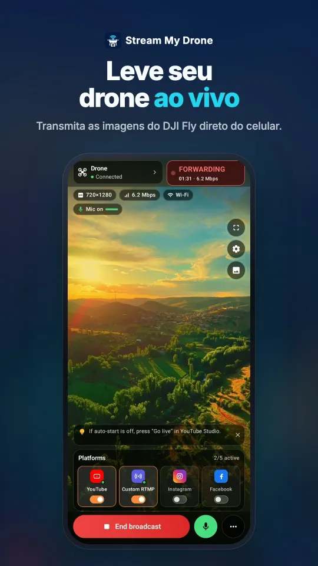

Transmissão ao vivo por RTMP no DJI Fly: a configuração completa
O DJI Fly consegue enviar a imagem ao vivo do drone para qualquer endereço RTMP: GO FLY → ••• → Transmission → Live Streaming Platforms → RTMP. Aponte para um computador com o Stream My Drone na mesma rede e, dali, a imagem pode ir para TikTok, Instagram, YouTube, Facebook, Twitch, Kick ou para vários deles ao mesmo tempo.
O DJI Fly pede um microfone no seu RC 2 e não inicia a live? Resolva sem comprar microfone →
Em resumo
- A opção RTMP fica em GO FLY → ••• → Transmission → Live Streaming Platforms → RTMP no DJI Fly.
- O DJI Fly precisa de um endereço como rtmp://192.168.1.20:1935/drone; o Stream My Drone mostra o endereço certo para o seu computador, com um QR code.
- O controle e o computador precisam estar no mesmo Wi-Fi ou no mesmo ponto de acesso do celular.
- O controle normalmente envia H.264 em 720p com áudio AAC; o app transforma isso em uma transmissão limpa em 1080p, vertical ou horizontal.
- Redes Wi-Fi de convidados costumam impedir que os aparelhos se enxerguem — use uma rede normal ou um ponto de acesso.
Como funciona a transmissão RTMP do DJI Fly
RTMP é o protocolo que as plataformas de live usam para receber vídeo. O DJI Fly tem um cliente RTMP: ele envia a imagem que o controle recebe do drone para o endereço que você digitar. As plataformas são exigentes com essa transmissão — orientação, quadros-chave, taxa de bits — e muitas geram um endereço diferente a cada live, por isso digitar o endereço de uma plataforma direto no DJI Fly raramente funciona bem.
O Stream My Drone fica no meio do caminho. Ele roda um pequeno servidor RTMP no seu Mac ou PC, recebe ali a transmissão do DJI Fly, mostra uma prévia e recodifica tudo no formato que cada plataforma espera. Tudo fica no seu computador; o vídeo não passa pelo servidor de mais ninguém.
Configure o RTMP no DJI Fly
- Coloque os dois aparelhos na mesma redeConecte o controle DJI e o computador ao mesmo Wi-Fi, ou ative o ponto de acesso do celular e conecte os dois a ele.
- Abra o Stream My DroneA etapa Conecte seu drone mostra um endereço como
rtmp://192.168.1.20:1935/dronee um QR code. O número é o endereço do seu computador nessa rede. - Abra a tela RTMP no DJI FlyToque em GO FLY, depois em ••• (os três pontos) e então em Transmission → Live Streaming Platforms → RTMP.
- Digite o endereçoDigite o endereço exatamente como aparece, ou escaneie o QR code se a sua versão do DJI Fly oferecer essa opção.
- Comece a transmitirInicie a transmissão no DJI Fly. No Stream My Drone, a primeira etapa fica verde e a prévia aparece em poucos segundos.

Veja no seu celularDa conexão com o DJI Fly à transmissão em várias plataformas, tudo em uma tela.




Qual rede usar
| Configuração | Funciona? | Observações |
|---|---|---|
| Wi-Fi de casa ou do escritório | Sim | Ideal para treinar. O envio para as plataformas usa a sua internet. |
| Ponto de acesso do celular | Sim | Ideal em campo. O controle e o computador se conectam a ele; o envio usa os dados móveis. |
| Wi-Fi de convidados | Muitas vezes não | Redes de convidados costumam isolar os aparelhos, então o DJI Fly não alcança o computador. |
| Controle nos dados móveis e computador em outra rede | Não | O endereço local do computador não pode ser alcançado de fora da rede dele. |
O link do controle até o computador carrega a transmissão completa, então mantenha o computador perto do roteador ou do ponto de acesso. O envio para as plataformas precisa de cerca de 10 Mbps estáveis de upload por destino.
Quais drones têm RTMP
Depende do drone, do controle e da versão do DJI Fly, não do Stream My Drone. Se o DJI Fly mostrar RTMP em Live Streaming Platforms, vai funcionar: o app recebe uma transmissão RTMP comum e nunca conversa com o drone em si. A DJI coloca e tira a opção entre versões, então confira no seu próprio controle.
No DJI RC 2, algumas versões do DJI Fly se recusam a começar a transmissão até que um microfone seja conectado ao controle.
Resolução de problemas
- O DJI Fly diz que não consegue conectar: confira se os dois aparelhos estão na mesma rede e se o endereço é igual ao do app, incluindo o
:1935/drone. - Funcionou ontem, mas hoje não: o computador pode ter recebido um novo endereço na rede. Copie de novo o endereço do app.
- Um firewall pede permissão: permita que o Stream My Drone aceite conexões de entrada em redes privadas.
- A imagem engasga: aproxime o computador do Wi-Fi ou mude para uma rede de 5 GHz. Um Wi-Fi que fica pulando entre bandas causa quedas curtas.
- A prévia diz 720p: é isso que o controle envia. O app mostra a entrada real e não finge que ela é 1080p nativo.
Perguntas
Onde fica a configuração RTMP no DJI Fly?
GO FLY → ••• → Transmission → Live Streaming Platforms → RTMP. Se RTMP não aparecer ali, o seu drone, controle ou versão do DJI Fly não oferece essa opção.
Qual endereço RTMP eu digito no DJI Fly?
O que o Stream My Drone mostra, no formato rtmp://
O DJI Fly consegue transmitir direto para o YouTube ou o Facebook?
O DJI Fly consegue enviar RTMP para qualquer endereço, mas as plataformas esperam configurações específicas, e algumas exigem uma chave nova a cada live. Enviar primeiro para o Stream My Drone dá a você uma prévia, o formato certo, vários destinos ao mesmo tempo e o tratamento automático das particularidades de cada plataforma.
Precisa de conexão com a internet?
O link do DJI Fly até o computador é local. Só a transmissão do computador para as plataformas usa a internet.
O vídeo é enviado para o servidor de terceiros?
Não. O Stream My Drone roda inteiramente no seu computador e envia a transmissão apenas para os destinos que você adicionar.
Transmita seu drone ao vivo pelo celular
O Stream My Drone para Android e iPhone recebe a imagem do DJI Fly e envia para YouTube, Instagram, Facebook, TikTok, Twitch, Kick ou seu próprio servidor, vários ao mesmo tempo. Compra única, sem assinatura.

Mais guias
DJI RC 2 não faz live sem microfone? Como resolver “No built-in mic in current device”
O DJI Fly 1.16 não inicia a live do RC 2 sem microfone. Por que acontece, o que funciona (microfone USB-C, AirPods) e uma solução sem hardware com um celular Android.
Como fazer uma transmissão ao vivo com o DJI Flip
Transmita ao vivo com o DJI Flip usando RC 2, RC-N3 ou RC-N2: RTMP no celular e no computador, diferença para o controle pela palma e pelo celular, enquadramento vertical.
Como fazer uma transmissão ao vivo com o DJI Lito X1
Faça live com o DJI Lito X1 usando RC 2, RC-N3 ou RC-N2: ajustes RTMP no DJI Fly, fluxos no celular e no computador, configuração das plataformas e soluções práticas.
Como fazer uma transmissão ao vivo com o DJI Lito 1
Transmissão ao vivo com o DJI Lito 1 usando RC 2, RC-N3 ou RC-N2: ajustes RTMP no DJI Fly, live pelo celular ou pelo computador, plataformas e solução de problemas.
Como fazer uma transmissão ao vivo com o DJI Air 3S
Faça transmissão ao vivo com o DJI Air 3S no YouTube, Instagram ou Facebook. Escolha o controle, envie o RTMP do DJI Fly ao celular ou computador e confira a imagem.
Como fazer uma transmissão ao vivo com o DJI Air 3
Como fazer live com o DJI Air 3 no YouTube, Instagram ou Facebook: escolha o controle, envie o RTMP do DJI Fly ao celular ou ao computador e confira a imagem de saída.
Como fazer uma transmissão ao vivo com o DJI Mavic 4 Pro
Transmita ao vivo com o DJI Mavic 4 Pro usando RC 2 ou RC Pro 2, pelo celular ou computador. Confira o RTMP do DJI Fly, o microfone, o limite de 720p e as plataformas.
Como fazer uma transmissão ao vivo com o DJI Mavic 3, Classic ou Pro
Faça transmissão ao vivo com o DJI Mavic 3, Classic ou Pro usando RC-N1 ou RC Pro. Saiba por que o DJI RC não transmite, além de celular, RTMP no computador e qualidade.
Como fazer uma transmissão ao vivo com o DJI Mini 3 Pro
Faça transmissão ao vivo com o DJI Mini 3 Pro usando RC-N1, o DJI Fly no celular e o Stream My Drone no computador. Entenda por que o DJI RC original não usa esse RTMP.
Como fazer uma transmissão ao vivo com o DJI Mini 3
Configure a live do DJI Mini 3 pelo RC-N1 e DJI Fly até o Stream My Drone no computador. Veja os limites do DJI RC, a imagem ao vivo em 720p e a publicação nas plataformas.
Como fazer transmissão ao vivo com o DJI Mini 5 Pro
Faça live com o DJI Mini 5 Pro usando RC 2 ou RC-N3. Configure o RTMP no DJI Fly, use celular ou computador e envie a imagem do drone para YouTube, Instagram ou Facebook.
Como fazer transmissão ao vivo com o DJI Mini 4 Pro
Faça transmissão ao vivo com o DJI Mini 4 Pro usando RC 2 ou RC-N2: configuração pelo celular e pelo computador, RTMP no DJI Fly, microfone obrigatório e checagem na plataforma.
Encontre e conte animais ao vivo com o seu drone DJI
O Stream My Drone encontra cabras, ovelhas, vacas, cavalos, burros e aves na imagem ao vivo do drone, marca cada animal na transmissão e faz a contagem no seu computador.
Por que o DJI Fly não transmite ao vivo no Instagram (e a solução)
O DJI Fly não tem opção para o Instagram e o cliente RTMP dele não faz o RTMPS criptografado que o Instagram exige. Veja o motivo e como fazer live no Instagram com drone DJI.
Transforme seu drone DJI na webcam do computador
Transforme seu drone DJI em webcam para TikTok LIVE Studio, OBS, Zoom, Google Meet ou Teams com a câmera virtual do Stream My Drone. Configuração, ideias e soluções.
Como fazer transmissão ao vivo com o DJI Neo
Como fazer transmissão ao vivo com o DJI Neo: qual modo de controle funciona (celular, RC-N3, óculos), o RTMP no DJI Fly e a live no Instagram, TikTok ou YouTube.
Como fazer transmissão ao vivo com o DJI Avata 2
Como fazer live com imagens FPV do DJI Avata 2: compartilhe a visão dos Goggles 3 com o DJI Fly no celular, transmita por RTMP e entre ao vivo no Instagram, TikTok ou YouTube.
Transmita ao vivo da sua câmera DJI Osmo para Instagram, TikTok e mais
O DJI Mimo transmite por RTMP das câmeras Osmo Action, Osmo Pocket e Osmo 360. Envie para o Stream My Drone e faça live no Instagram, TikTok e YouTube ao mesmo tempo.
Como fazer live com a Osmo Pocket 3 no Instagram e no TikTok
Como fazer transmissão ao vivo com a DJI Osmo Pocket 3 por RTMP no DJI Mimo para Instagram, TikTok e YouTube ao mesmo tempo, e usá-la como webcam sem fio com o Stream My Drone.
Como fazer live com uma câmera Osmo Action no Instagram e no TikTok
Faça transmissão ao vivo com a DJI Osmo Action 6, 5 Pro, 4 ou 3 por RTMP no DJI Mimo para Instagram, TikTok, YouTube e Twitch ao mesmo tempo com o Stream My Drone.
Como fazer live no TikTok com um drone DJI
Faça live no TikTok com seu drone DJI pelo DJI Fly: com chave de transmissão do TikTok, ou sem ela pelo TikTok LIVE Studio e uma câmera virtual. Configurações e soluções.
Como fazer live no Instagram com um drone DJI
Faça live no Instagram com seu drone DJI: pegue a URL e a chave de transmissão no instagram.com, envie o RTMP do DJI Fly pelo Stream My Drone e toque em “Iniciar live”.
Como fazer transmissão ao vivo de um drone DJI no YouTube
Transmita ao vivo do seu drone DJI no YouTube: ative a transmissão ao vivo, copie a chave no YouTube Studio e envie o RTMP do DJI Fly pelo Stream My Drone. Configurações e dicas.
Como fazer live no Facebook com um drone DJI
Faça transmissão ao vivo do seu drone DJI no Facebook: pegue a URL do servidor RTMPS e a chave no Live Producer, envie o DJI Fly pelo Stream My Drone e entre ao vivo.
Como transmitir um drone DJI na Twitch
Faça live do seu drone DJI na Twitch: copie a chave de transmissão no Painel do Criador, adicione a Twitch como destino RTMP personalizado no Stream My Drone e entre ao vivo.
Como transmitir um drone DJI na Kick
Faça live do seu drone DJI na Kick: copie a URL e a chave de transmissão no painel da Kick, adicione-as como destino RTMP personalizado no Stream My Drone e entre ao vivo.
Transmita um drone DJI em várias plataformas ao mesmo tempo
Envie a live de um drone DJI para TikTok, Instagram, YouTube, Facebook, Twitch e Kick ao mesmo tempo com o Stream My Drone — grátis, local, sem serviço de retransmissão.
Stream My Drone vs Restream: qual escolher para o seu drone?
Live de drone DJI em várias plataformas: retransmissão na nuvem do Restream ou Stream My Drone no seu computador? Custo, marca d’água, Instagram, vídeo vertical e quando cada um vence.
Transmita um drone DJI sem configurar NGINX e OBS
O jeito comum de levar o DJI Fly ao OBS é um servidor RTMP NGINX, um arquivo de configuração e uma fonte de mídia. Veja o que isso envolve e como pular tudo com um só app.